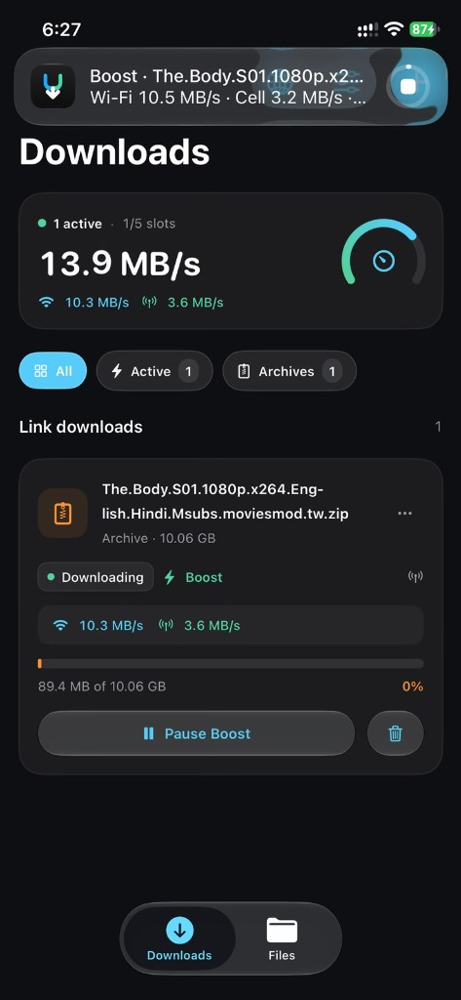
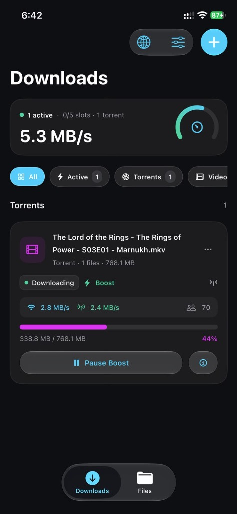
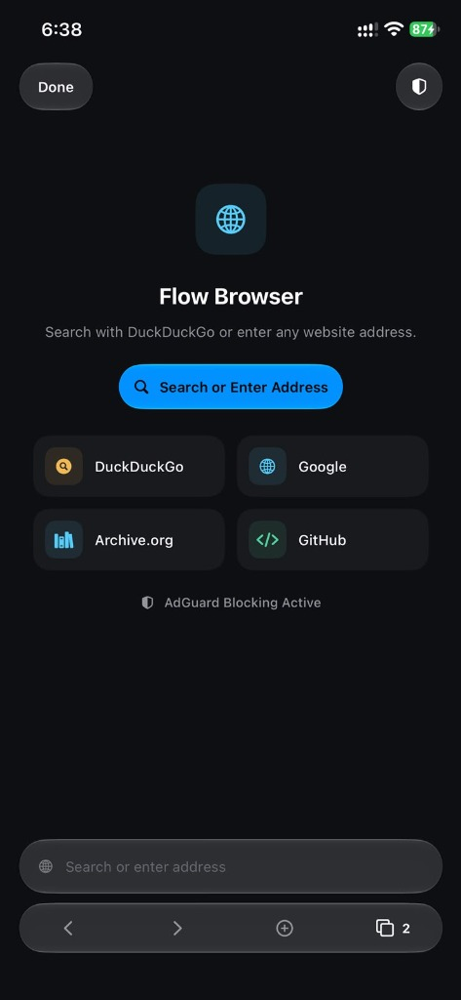
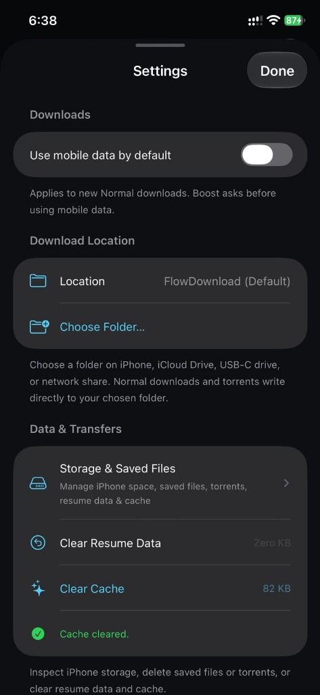
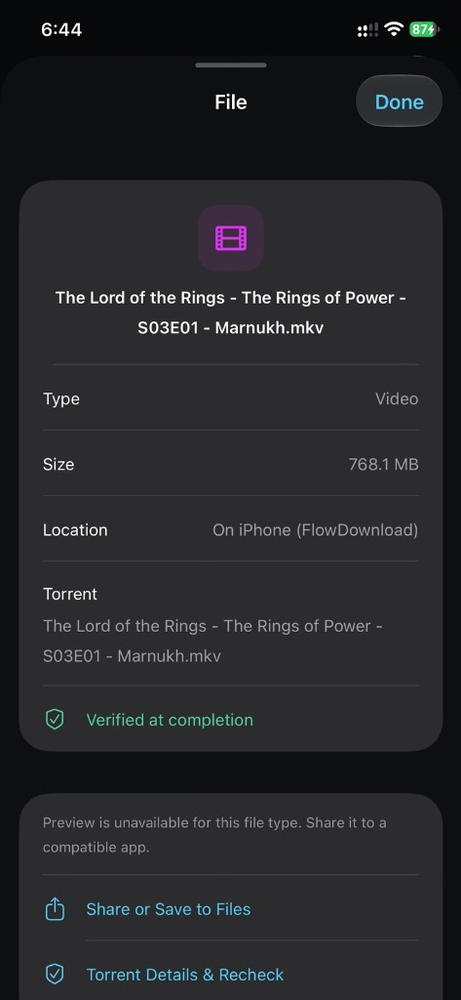

Wi-Fi + Cellular Boost
Splits HTTP Range downloads and libtorrent peer traffic across both interfaces simultaneously with connection reuse and automatic stalled-lane recovery.
Two dedicated native apps — SwiftUI for iOS (.ipa) and Jetpack Compose Material 3 for Android (.apk). Combine both radios for faster HTTP and torrent downloads, export to external USB drives, and verify SHA-256 checksums automatically.
Two standalone builds: FlowDownload for iOS (SideStore / AltStore / TrollStore) & FlowDownload for Android (Direct APK)
Three coordinated stages keep both radios saturated while protecting slow flash storage from write stalls.
Assigns byte-range chunks and torrent peer sockets explicitly across Wi-Fi (en0) and Cellular (pdp_ip0).
Coalesces out-of-order chunks on fast internal APFS so network sockets never block on slow external drives.
Streams sequential 4 MiB blocks to Lightning/USB-C drives and validates SHA-256 integrity on completion.
Benchmarked on iPhone 12 Pro over live Wi-Fi and Cellular links (BN-01 to BN-03), reaching 98% of the combined single-radio sum.
Every subsystem is tuned for unreliable mobile links, slow USB flash drives, and background continuity.
Splits HTTP Range downloads and libtorrent peer traffic across both interfaces simultaneously with connection reuse and automatic stalled-lane recovery.
Embedded C++ LibtorrentNative engine supporting magnet links, .torrent files, pause/resume, and buffered disk I/O.
Stages downloads on fast internal APFS when space allows and exports sequentially to Lightning or USB-C drives without stalling.
Content-blocking browser with tab persistence plus Share Sheet and Safari Web Extensions to hand links straight to FlowDownload.
Discovers companion .sha256 files or pasted hashes and validates completed downloads before you move or install them.
Live dual-radio Boost telemetry, torrent peer aggregation, AdGuard-backed browsing, and external USB storage controls.





Download the separate native app built specifically for your platform: SwiftUI (.ipa) for iPhone/iPad or Jetpack Compose Material 3 (.apk) for Android.
Requires SideStore installed on your iPhone (if Safari says invalid address, install SideStore first or use Copy URL above).
Requires AltStore installed on your iPhone (if Safari says invalid address, install AltStore first or use Copy URL above).
.ipa package directly from GitHub Releases..sha256 checksum from the release page before installing.FlowDownload-v1.0.0.apk built separately for Android (arm64-v8a & x86_64)..apk on your Android phone or tablet (enable Install unknown apps if prompted).f79abc2f18d80419d4081728ede0f6ed8432c0f83838cee5210a40b4675434f1.Separate native Android app with ConnectivityManager Wi-Fi + Cellular Boost, SAF USB OTG export, AdGuard WebView browser, and NDK libtorrent.
Apple’s App Store Review Guidelines prohibit native torrent clients. Distributing via SideStore, AltStore, and direct IPA lets FlowDownload keep its embedded LibtorrentNative engine and external USB workflows intact.
Boost works for torrents (splitting peer traffic across both interfaces) and for HTTP/HTTPS servers that support byte-range requests (Accept-Ranges: bytes). Servers without range support automatically use a single reliable stream.
Slow Lightning and USB-C flash drives often pause mid-write. When internal storage has room, FlowDownload buffers on fast APFS first and exports sequentially to your USB drive, keeping network lanes at full speed.
No. Downloads, browser tabs, ad-block rules, and diagnostics stay locally on your device.